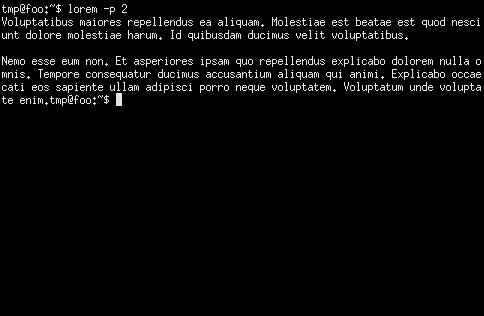
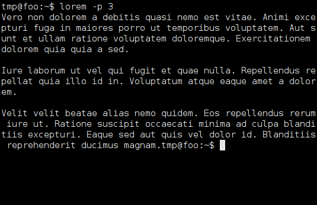
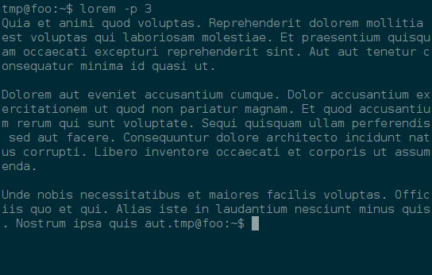

Somewhere I read a recommendation for xterm a terminal emulator for the X window system. I tried it and was surprised that it looks so ugly. I like programs with sane and usable defaults. Maybe xterm has low profile defaults because it supports very old hardware. For a modern X window system some configuration is necessary.
 Screenshot of xterm with default settings
In my opinion the default font size is way to small and the font looks anachronistic. I also dislike the white font on black background. Don’t be afraid with some minor configuration improvements it’s going to look great. On the pro side I instantly liked about xterm that it doesn’t interfere with the shortcuts of other programs for example mc.
For general configuration read the ArchWiki xterm article. When configuring my xterm setup I had to choose a terminal font. After some testing I chose Vera Sans Mono a few months ago and did not regret my decision.
“It is a TrueType font with full hinting instructions, which improve its rendering quality on low-resolution devices such as computer monitors. […] The Bitstream Vera Sans Mono typeface in particular is suitable for technical work, as it clearly distinguishes ‘l’ (lowercase L) from ‘1’ (one) and ‘I’ (uppercase i), and ‘0’ (zero) from ‘O’ (uppercase o).” — (Quoted from Wikipedia)
There was no need to install the font on GNU/Linux. It was already installed on my Debianbox. Copy the following lines to your ~/.Xresources file to use it as your xterm font with a reasonable font size. If you don’t already have an .Xresources file just create it!
URxvt.font: xft:Bitstream Vera Sans Mono:pixelsize=15
XTerm*faceName: Bitstream Vera Sans Mono:pixelsize=15
 Screenshot of xterm with Vera Sans Mono font
Much better than the default font. I prefer to use the great solarized color scheme instead of the default black and white.
 Screenshot of xterm with solarized color scheme
Additional useful links:¶
- https://lukas.zapletalovi.com/2013/07/hidden-gems-of-xterm.html
- https://unix4lyfe.org/xterm/
- http://scarygliders.net/2011/12/01/customize-xterm-the-original-and-best-terminal/
Detailed information and Download for Windows:¶
How to change the font in gvim (gui):¶
http://vim.wikia.com/wiki/Change_font
If you have any questions, suggestions, thoughts and comments please feel free to email me.
License of this blog post:

This work is licensed under a Creative Commons Attribution-ShareAlike 4.0 International License.